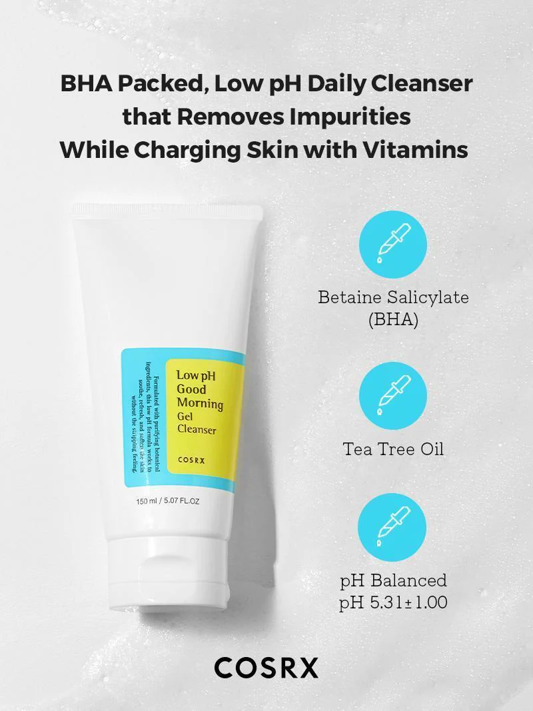

Top Pick For Cleansers
For Normal / Dry skin: CeraVe Facial Cleanser
The CeraVe Hydrating Facial Cleanser is on of the most popular facial cleaners in the skin care community right now. It is perfect for anyone with a normal to dry skin type. Many moisturizers have the ability to make the skin feel dry and tight after washing, but this one does the opposite. It leaves your skin feeling clean without the stripping feeling. Its smooth formula contains helpful ingredients like hyaluronic acid which helps the skin stay hydrated and healthy, as well as multiple different types of ceramides that assist with locking in the moisture in the skin. This gentle cleanser is the perfect starter for those who want to stay within their budget and also have healthy glowing skin.
Perfect For:
- Normal Skin
- Dry Skin
- Combination
INGREDIENTS: AQUA / WATER / EAU, GLYCERIN, CETEARYL ALCOHOL, PEG-40 STEARATE, STEARYL ALCOHOL, POTASSIUM PHOSPHATE, CERAMIDE NP, CERAMIDE AP, CERAMIDE EOP, CARBOMER, GLYCERYL STEARATE, BEHENTRIMONIUM METHOSULFATE, SODIUM LAUROYL LACTYLATE, SODIUM HYALURONATE, CHOLESTEROL, PHENOXYETHANOL, DISODIUM EDTA, DIPOTASSIUM PHOSPHATE, TOCOPHEROL, PHYTOSPHINGOSINE, XANTHAN GUM, CETYL ALCOHOL, POLYSORBATE 20, ETHYLHEXYLGLYCERIN. Source: Cerave.com

For Oily / Combination skin: Low pH Good Morning Gel Cleanser Facial Cleanser
This cleanser is one of my favorites. Using this makes my face feel squeaky clean and oil free. It's perfect with those who suffer with oily skin, as it delays the act of oils emerging from the skin. The use of the low pH levels in this cleanser helps with the balance of oil and water within the skin, so it stays property hydrated. It also includes tea tree oil which helps with uneven skin tone as it refreshens and brightens the skin. Not to mention, the earthy tea tree smell definitely wakes you up!
Perfect For:
- Oily Skin
- Normal Skin
- Combination
INGREDIENTS: Water, Cocamidopropyl Betaine, Sodium Lauroyl Methyl Isethionate, Sodium Chloride, Polysorbate 20, Styrax Japonicus Branch/Fruit/Leaf Extract, Butylene Glycol, Saccharomyces Ferment, Cryptomeria Japonica Leaf Extract, Nelumbo Nucifera Leaf Extract, Pinus Palustris Leaf Extract, Ulmus Davidiana Root Extract, Oenothera Biennis (Evening Primrose) Flower Extract, Pueraria Lobata Root Extract, Melaleuca Alternifolia (Tea Tree) Leaf Oil, Allantoin, Caprylyl Glycol, Ethylhexylglycerin, Betaine Salicylate, Citric Acid, Ethyl Hexanediol, 1,2-Hexanediol, Trisodium Ethylenediamine Disuccinate, Sodium Benzoate, Disodium EDTA. Source: Cosrx.com